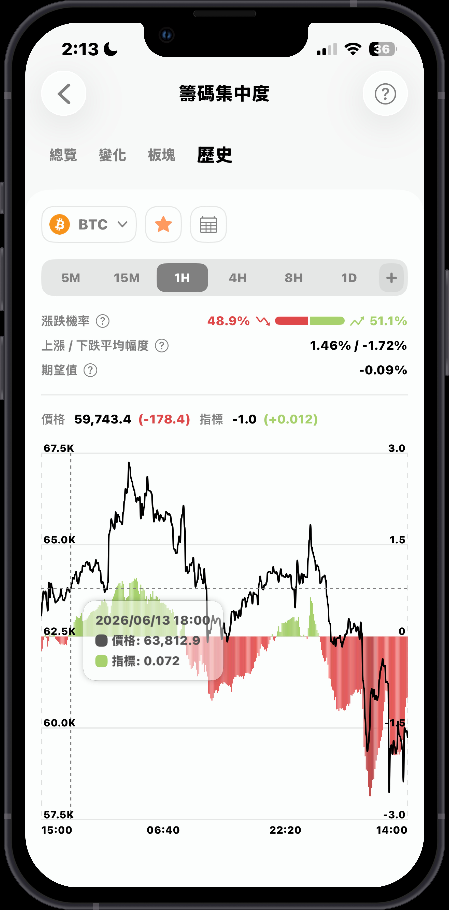
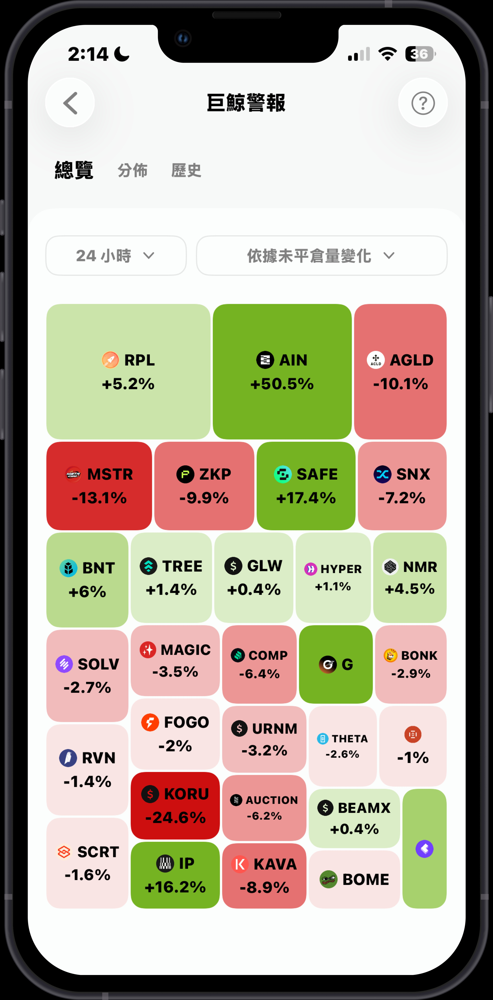
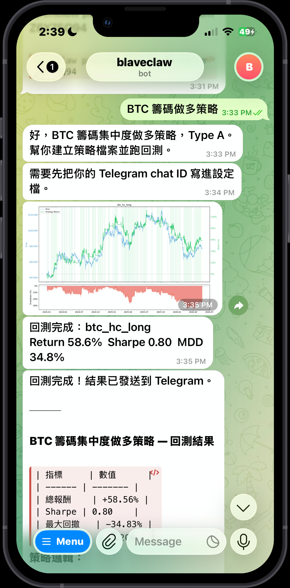
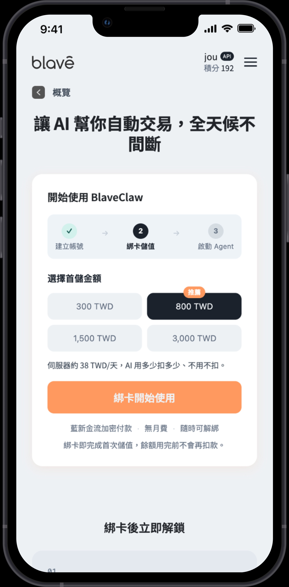

Product Manager · Web3 & AI · Taipei
用戶研究 × 數據觀察 × 跨部門協作
關於我
2 年在 Web3 新創參與產品規劃、用戶研究與跨部門協作。因為自己就是目標用戶（加密新手），習慣從第一手使用體驗出發找產品問題，再用數據驗證。
樂於學習新技術與 AI 工具，提升產品流程與工作效率。現在希望把這套能力帶進 PM 角色，做出真正解決問題的產品。
產品案例
加密新手面對三層障礙：看不懂指標、資訊分散在各大平台、不知道如何從上千個幣種篩出值得交易的標的。試過 KOL 文章和各種工具，還是找不到適合自己的方法。
用戶訪談 + 競品分析（CoinMarketCap、CoinGecko、CoinAnk）後發現：競品都有資料，但沒有人幫用戶「做決策」。機會點在策略決定層，這也是我們切入的核心。
以自身新手視角設計三層決策流程：排行榜篩幣 → 儀表板分析 → 觀察清單追蹤，並把關每個功能的易讀性，讓複雜指標變得散戶也能看懂。


數據平台留存受市場波動影響大，團隊以既有數據優勢延伸至 AI 自動交易工具。但安裝流程需申請雲端帳號、購買 LLM，耗時 15–20 分鐘，Workshop 現場安裝成功率僅 5–10%。
用戶在進入產品前就先流失——問題不在介面，在產品邊界定義錯了：把技術前置作業留給用戶自己處理。
推動將技術配置內化為產品端預設，用戶只需購買 Credit、一鍵下載即可在 Telegram 上使用。同步負責介面引導、說明文件與示範影片。


傳統跟單平台超過 75% 的用戶都賠錢，因為交易員可以透過多帳號對沖、永不止損等方式刷高 ROI 和勝率，用戶根本無從判斷真實績效。這個平台以 DAO 投票機制解決信任問題，但因為運作方式比較特別，對新用戶來說理解門檻相對較高。
負責優化投票流程與介面，新增交易員排行榜頁面，將各交易員的績效指標以清楚易讀的方式呈現，讓用戶不需要具備專業背景，也能比較各交易員的真實表現並做出有根據的投票決策。
以新手視角把關每個流程步驟的易讀性，確保複雜的 Web3 機制——從購買代幣、參與投票到查看績效——都能讓非專業用戶理解和操作，降低 DAO 參與門檻。
技能與工具
聯絡我